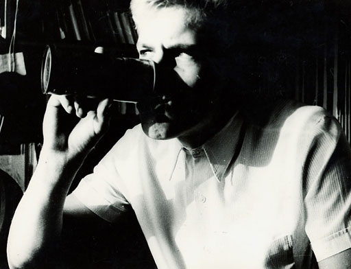
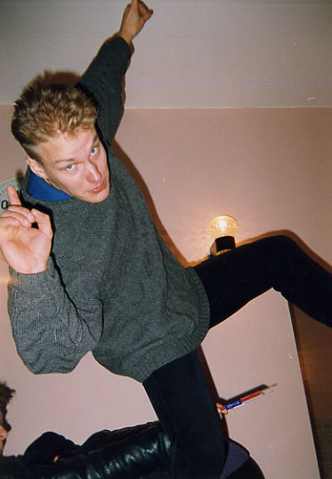

1984 m
Algimantas Kriščiūnas
Vaikystėje apačioje gyvenančiam kaimynui mėtydavome kiaušinius į balkoną. Tas kaimynas kiekvieną kartą ateidavo pas mano tėvus skųstis. Vieną dieną jis neiškentė ir pakvietė juos pasižiūrėti, ką pridarėme. Tėvas liepė atsivesti tą draugą, su kuriuo mėteme, ir viską išvalyti. Raudonuojančiom ausim valėm balkoną.
Vieną kartą buvo užėjusi manija rodyti striptizą. Atsitraukėm užuolaidas, nusirengėme, atsistojome ant stalo... Ir kaip tik girdžiu: mano tėvas rakina duris! Čiapas spruko į kitą kambarį, o aš tik spėjau užsimauti trauzus. Tėvas įtartinai pažiūrėjo: "Ką jūs čia darot?"
Iš pradžių kartu visai negrojome, tiesiog Andrius pabarškindavo gitara per kažkokius žiburėlius... Iki devintos klasės, kai sujungė mano ir Andriaus klases, mes nebendravom, vieni kitiems buvom neįprasti. Devintos klasės pradžioje buvo žygis. Tame žygyje ir susidraugavom.
Ir tada pradėjom daryti "šizoidinius" spektaklius: vos ne kas savaitę mokykloj būdavo teminiai vakarai (pvz. chemikų vakaras). Kažką suvaidindavo viena klasė, kita. Andrius buvo iniciatorius.
Vaidinimai būdavo, na, ne tai kad debiliški, bet tiesiog neieškojom vientisumo. Buvo svarbu padaryti kažką juokinga, linksma, ekstravagantiška, neįprasta... Ne turinys, o išraiškos forma buvo svarbiausia.. Arnas irgi prisidėdavo. Jis toks žmogus, ant kurio galima liežuvį pagaląsti. O Andrius... Iš jo kažkaip nesišaipydavom. Žinoma, pasišaipydavome, bet nepiktai.
Mokykloj Andrius buvo idėjinis lyderis. Tiesa, buvo ten ir daugiau lyderių. Jie paprastai dalyvauja visokiuose "plotuose", išgertuvėse su merginomis, o mes su Andriumi - ne, niekada nedalyvaudavom. Tiesiog nelikdavo laiko.
Dešimtos klasės pradžioj pradėjo groti trise: Arnas, Andrius ir Darius Trasevičius - klasiokas bosistas.
Buvo kažkoks susirinkimas, po jo - kultūrinė programa. "Kultūrinėj programoj pasirodys 10b klasės ansamblis "Sunki muzika", vadovas Andrius Mamontovas". Brač pravalas!..
"Koncertas" baigėsi, brač galvoju turbo ansamblis. Gal net ne ansamblis, o pats veiksmas. Andrius, Lukošius groja!
Kartą sako man per pamoką: "Einam, pamėginsim". Galvoju: "Ką aš mėginsiu, jeigu nieko nemoku?". (Kartais ateidavau namo, įsijungdavau Povilaičio plokštelę ir bandydavau groti tą dainą "A ja govariu...". Šioje plokštelėje yra daug gerų ritmų, o man išeidavo tik bum čik bum čik. Nuo to laiko pamėgau Povilaitį. Tiesa, tada aš dainavau folkloriniam ansambly. Tai ir buvo vienintelis sąlytis su muzika). Na, galvoju, reikia draugams padėti. O ten tokie būgnai... Na, du būgnai ir "čarlis". Andrius parodė: kojom nereikėjo nieko daryti, tik rankom. Keturis taktus sugrojau - viskas normaliai. Andrius paėmė gitarą, ir pradėjom. Sudaviau keturis kartus. Penktą jaučiu, pamirštu, kaip turiu daužyti. Užmirštu į kurį būgną jau daviau, į kurį nedaviau! Sustojau. Na, sakau, vyrai, arba jūs man duodat parepetuot, arba nieko nebus. Bet paskui kažkaip pavyko. Reikėjo daug fizinės jėgos, nervinės įtampos, bet įveikiau tą pirmąjį gabalą. Vėliau truputį "prasikaliau". Ir viskas savo keliu pradėjo riedėti: repeticijos, aparatūros trūkumai ir t.t. Kaip visiems.
Kartą Andrius pasakojo, kad matė klipą, kur "elektrikai" elektriniu smuiku groja. Sakau: "Negi sunku pasidaryti?" Iš tikro, pasidaryti nesudėtinga: paėmiau teniso raketę, perpjoviau per pusę, pritvirtinau nuėmėją, ištempiau stygas - smuikas. Pasijungėm viską - džeržgia. Tik bėda ta, kad niekas nemokėjo groti. Taip nieko ir neišėjo.

1994 m
Mes su Andrium Jaunųjų technikų stoty (tada buvo tokia) lankėm filmavimo būrelį. Andrius dažniausiai filmuodavo, aš vaidinau. Į tą būrelį ateidavo ir merginų. Bet vis kažkokios pavėpusios. Po dešimtos klasės išvažiavom į kūrybinę stovyklą prie ežero. Vienu metu stovykloj susižavėjau mergina, kuri buvo labai negraži. Mes filmavom ir staiga sugalvojau scenarijų, kuriame aš tą merginą pabučiuoju, bet kad draugai neįtartų mano įsimylėjimo - tegul jinai man trenkia per žandą. Ji tokia silpna, iš tikrųjų... Bet kaip man trenkė - nukritau! Tai buvo pirmas ir vienintelis kartas, kai gavau nuo merginos per žandą. O tas filmas, tiesa, laimėjo pirmą vietą, dar kažkur turiu garbės raštą.
<..>
Paskui viskas labai paprasta: mes išėjome į armiją. Susirašinėdavome su Andrium, su Lukošium. Bet nieko įdomaus viens kitam neparašydavom. Aš pastebiu, kad mus su Andrium sieja tiktai bendras darbas. Kaip jis nutrūksta, tai nebėra apie ką šnekėti. Iš tikro taip ir yra. Na, koks gali būti ryšys tarp dviejų vyrų? Negali gi būti meilės intrigų. Tik kažkokia bendra veikla.
Armijoje Andrius įsitrynė į orkestrą. O aš pasilikau dailininku Rygoje. Po metų ar daugiau pradėjau groti visokias ten rusiškas "Margarita, Margarita" tipo melodijas. Paskui vieną kartą atėjo pas mane du tokie lietuviai vyrukai ir sako: "Mes irgi norim groti". Na ką, grojam. Sukūrėm dar vieną ansamblį, jau lietuvišką. Nors mes nekoncertuodavom, bet kurdavom savo gabalus. Padarėm gal kokius keturi, penkis, įrašėm MC "Muzikavimo pagrindai".
Kai išėjau į armiją, tai "Foje" jau grojo nauja sudėtis, aš nebesitikėjau grįžti, kadangi mokiausi Kaune, dar buvo likę keturi kursai. Kai grįžau iš armijos, po metų grįžo ir tie, su kuriais grojau armijoje. Sukūrėm ansamblį, kurį pavadinom "Tazz". tai buvo 1989-ais metais. Mes gana rimtai grojom, man teko iniciatoriaus vaidmuo, bet jaučiau, kad man neužtenka energijos. Grojom galbūt ir įdomiai, ir muzika gera, bet nėra jėgos. Ir tada aš supratau: norint, kad būtų ansamblis - svarbiausia ne tai ką groji, bet kad būtų lyderis, stipri asmenybė.
Paskui grįžau į Vilnių. Visą tą laiką aš nenorėjau skambinti Andriui, o jis man. Žodžiu nesusipratimo siena, negera siena. Ir vieną dieną man skambina Andrius ir sako: "Va, ateik, pašnekėsim". Užeinu ir jaučiu, kad jis norima man kažką pasakyti, bet nedrįsta. Pagaliau sako: "Reikia senąjį "Foje" atgaivinti, sukviesti visus, įrašyti plokštelę...". O aš sėdžiu, galvoju: jis mane čia turi omeny ar ką? Negali tiesiai pasakyti: "Ateik groti". O aš negaliu tiesiai paklausti: "Ar man reikia groti?" Na, jis ten kažką trynė trynė, bet jau su tokiu lyg ir pragiedrėjimu grįžau namo.
1991 metais važiavom į kažkokį turne, kažkokie fanai važiavo, ir tada aš pradėjau jausti, kad kažkaip netaip, kažko trūksta. Mes tada grojom pusę koncerto gyvai, pusę - su daline fonograma, vokalas "gyvas". Ir tokios nerealios svajonės: "Brač, kad grįžtų Lukošius". Ir niekas nežinojo, kada jis grįš. Jis su mama buvo Amerikoje. Mes galvojome: "Va, idealiausias variantas, kad grįžtų Lukošius ir parsivežtų sintezatorių". Staiga sužinojome, kad kitą savaitę jis gryžta. Viskas, grįžta Lukošius! Aišku, jokio sintezatoriaus jis neparsivežė, parsivežė video-magnetofoną ir labai daug pornografinių filmų. Na, mes suprantam jo vienatvę.
Tai va, taip nedrąsiai iš pradžių pasikvietėm jį pasikalbėti. Ir ką mes matome: kaip prieš septynerius metus, kaip mokyklos suole, visai nepasikeitęs, nė trupučio! Išvažiavom į turne, ir tada aš pajutau, kas yra džiaugsmas.
Ateitis... tai kažkaip labai nekuklu... Neverta galvoti, kas bus po dešimties metų, po metų. Reikia galvoti, kas bus rytoj, galbūt šiandien, ir aš jaučiu, kad grojimas man pradeda patikti. Ir gročiau, net jeigu negautume pinigų. O ir tie pinigai juokingi. Juos tiesiog "pravalgai". Visi mano, kad mes pinigų turim kaip šieno. Deja, taip nėra.
Pirmieji "Foje" tekstai - tai Andriaus išgyvenimai, kurie, kaip bebūtų keista, dažnai sutampa su mūsų mintimis... Tos dainos, devintos-dešimtos klasės, pavyzdžiui "Vaikystės stogas" nesensta. Mes ir dabar jas grojame, ir nėra noro iš jų juoktis, šaipytis, kad naivu, kad sentimentalu. O gal mes nesikeičiam, netobulėjam?
Algis
(ištraukos iš knygos "Aš atsisuksiu atgal")